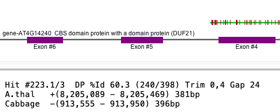

|
|
SyMAP 2D Align |

|
|
|
|||
Details of 2D Alignment
SyMAP clusters hits as follows: The raw anchor set are the hits found by MUMmer. Multiple hits are clustered into a single hit when the hits are close together. The hits in a cluster are called subhits; the subhits of a cluster are either all on opposite strands or the same strands.
Alignment: To build the synteny, SyMAP uses Promer by default for analysis of two different genomes. Promer translates sequences, uses a fast suffix tree alignment algorithm, then converts the coordinates back to nucleotide. To display the alignment in SyMAP, SyMAP performs a semi-global dynamic programming (DP) algorithm on the nucleotide sequences using the MUMmer coordinates, which can produce a slightly different alignment. This document discusses the following:
- Overlap: The hits can overlap.
- Trim: There can be non-matching sequence at the beginning or end of the DP alignment. SyMAP trims this sequence before display.
- Strand: If the gene strands are the same, the hit strands will be the same (=); likewise if the gene strands are different, the hit strands will be different (!=). See Strand for more information on when they are different.
Overlap hits

The
|
|

Selected A.thal alignment

| Selected Cabbage alignment

|
Extreme example:

|
The
|
Trimmed alignments
SyMAP extracts the sequence between the coordinates provided by MUMmer and aligns the sequence. When the sequences do not align fully, the alignment is trimmed. The left side of the image below required some trimming for Hit #1.6 but not for Hit #1.5. The right image shows Hit #1.6 without trimming.

The MUMmer results for Hit #1.6 are:
[S1] [E1] [S2] [E2] [LEN 1][LEN 2][% IDY] [% SIM] 77766 77939 4268 4095 174 174 91.38 94.83Note the the %Id for MUMmer is 91.38, and is 92.9 for the trimmed SyMAP dynamic programming result. These differences are a natural results of the variation in algorithms. Most hits do not need trimming, or only 1 base at the beginning or end.
If you want to view the alignment without trimming, you can run
Strand
Detail of|  |
{kind=link}